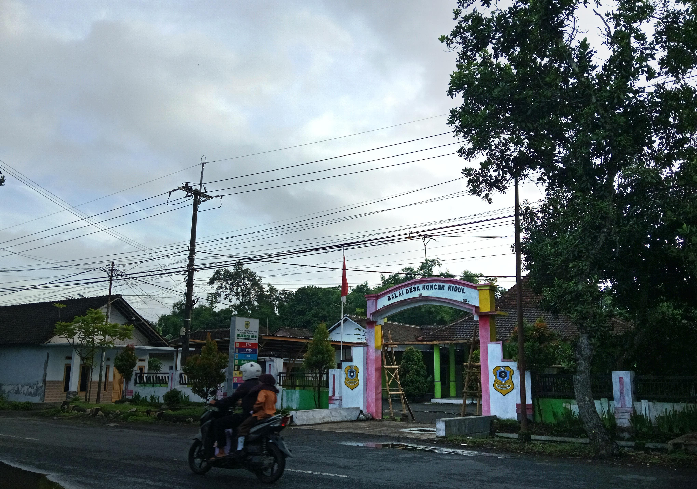

WEBSITE DESA KONCER KIDUL
"Bangun koneksi lebih dari dapatkan informasi tentang Desa Koncer Kidul"
Get StartedAbout
Informasi tentang Desa Koncer Kidul
Selamat Datang Di Desa Koncer Kidul Desa Yang Bangga dengan Budayanya
Selamat Datang di Desa Koncer Kidul Desa Koncer Kidul merupakan salah satu desa yang terletak di Kecamatan Tenggarang, Kabupaten Bondowoso, Jawa Timur. Desa ini memiliki ciri khas berupa keindahan alam pedesaan yang asri dan budaya lokal yang kaya. Dengan populasi lebih dari XXXX jiwa, masyarakat Koncer Kidul hidup rukun dalam keberagaman, menjunjung tinggi tradisi, dan aktif berkontribusi dalam pembangunan desa.
Nama "Koncer" berasal dari bahasa lokal yang mengacu pada kemakmuran dan kesejahteraan. Desa ini telah lama menjadi bagian dari sejarah Bondowoso sebagai wilayah agraris yang subur. Seiring waktu, Desa Koncer Kidul berkembang dengan mempertahankan adat istiadatnya yang unik, seperti seni pertunjukan tradisional dan kegiatan gotong royong yang terus dilestarikan.
Desa Koncer Kidul adalah permata hijau yang subur di mana hamparan persawahan yang luas menjadi nadi kehidupan masyarakatnya. Kaya akan hasil agraris, desa ini menawarkan pemandangan menakjubkan sekaligus menunjukkan potensi luar biasa dalam sektor pertanian yang menjadi kebanggaan bagi warganya
KEUNGGULAN DESA KONCER KIDUL
Potensi Pertanian yang Subur
Desa Koncer Kidul memiliki lahan pertanian yang subur, cocok untuk budidaya padi, jagung, sayur-mayur, dan tanaman perkebunan seperti kopi. Hasil pertanian ini tidak hanya memenuhi kebutuhan lokal tetapi juga menjadi komoditas unggulan daerah
Keragaman Budaya dan Tradisi Lokal
Desa ini kaya dengan budaya lokal, termasuk seni tradisional, upacara adat, dan nilai gotong royong yang masih dijaga hingga kini. Tradisi ini menjadi identitas unik yang mempererat masyarakat serta menarik perhatian wisatawan.
Keindahan Alam yang Memikat
Dikelilingi oleh perbukitan dan area hijau, Desa Koncer Kidul menawarkan panorama alam yang menenangkan. Lokasi strategis ini menjadikan desa sebagai tempat yang potensial untuk agrowisata dan wisata alam.
Masyarakat yang Ramah dan Harmonis
Warga Desa Koncer Kidul terkenal dengan keramahannya. Nilai gotong royong dan kebersamaan membuat masyarakat hidup dalam harmoni, menciptakan lingkungan yang aman dan nyaman bagi penduduk maupun pengunjung.
Produk UMKM Berkualitas
Desa ini memiliki berbagai produk unggulan dari sektor UMKM, seperti kerajinan tangan, makanan tradisional, dan olahan hasil pertanian. Produk-produk ini mencerminkan kreativitas masyarakat lokal sekaligus menjadi penggerak ekonomi desa.
Potensi Pengembangan Wisata Edukasi
Dengan keunggulan pertanian, budaya, dan tradisi, Desa Koncer Kidul cocok dikembangkan sebagai desa wisata edukasi. Wisatawan dapat belajar tentang proses bertani, membuat kerajinan lokal, atau berpartisipasi dalam kegiatan adat yang unik.
Galeri Desa
Kegiatan dan Infrastruktu di Desa Koncer Kidul
- All
- Kegiatan
- Infrastruktur
Koncer Kidul Carnival
Minggu(27/08/2023)
Pemasangan Larangan Buang Sampah Sembarangan
Jum'at(29/12/2023)
Masjid Jamik Al Mobarikiin
Masjid Koncer Kidul

{kind=link}
{kind=link}
{kind=link}
{kind=link}
{kind=link}
Reboisasi Penghijauan Desa
Minggu(18/8/2024/)
{kind=link}
Balai Desa Koncer Kidul
Balai Desa
Perangkat Desa
Necessitatibus eius consequatur ex aliquid fuga eum quidem sint consectetur velit
Ra Hamid - Ra As'ad
Bupati BondowosoHendra Widodo
Kepala Desa Koncer KidulContact
Desa Koncer, selalu siap mendengar aspirasi Anda.
Location
Desa Koncer Kidul
Call Us
084908765323
Email Us
KoncerKidul@gmail.com